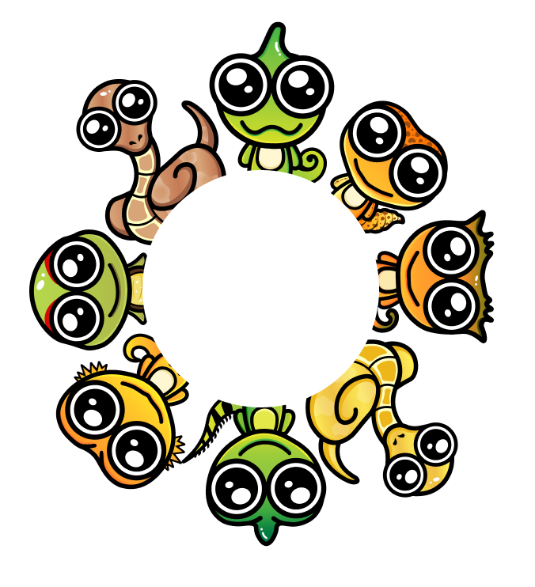
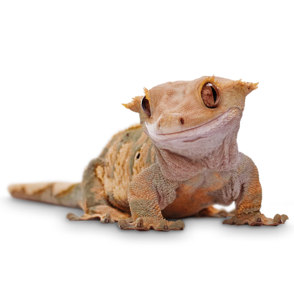

Пройди тест и узнай, какая рептилия
подойдет тебе больше всего!
1. Какой пейзаж вам нравится больше всего?
Горы
Горы
Горы
Горы

Больше всего вам подходит
Реснитчатый Бананоед

Бананоеды — ручные гекконы, которых можно не кормить живыми
насекомыми. В природе питаются насекомыми и перезрелыми
фруктами, но в домашних условиях хорошо приучаются к
специализированным кормам для рептилий. Реснитчатый — некрупный
геккон до 12-15 см. Самый распространенный вид, который выбирают
в качестве домашнего питомца. Имеет примечательные выросты
вокруг глаз, за которые и получил свое название «реснитчатый»,
поскольку они немного напоминают ресницы.
Если вам понравился кто-то из питомцев,вы можете заказать
сувенирную продукцию с его изображением